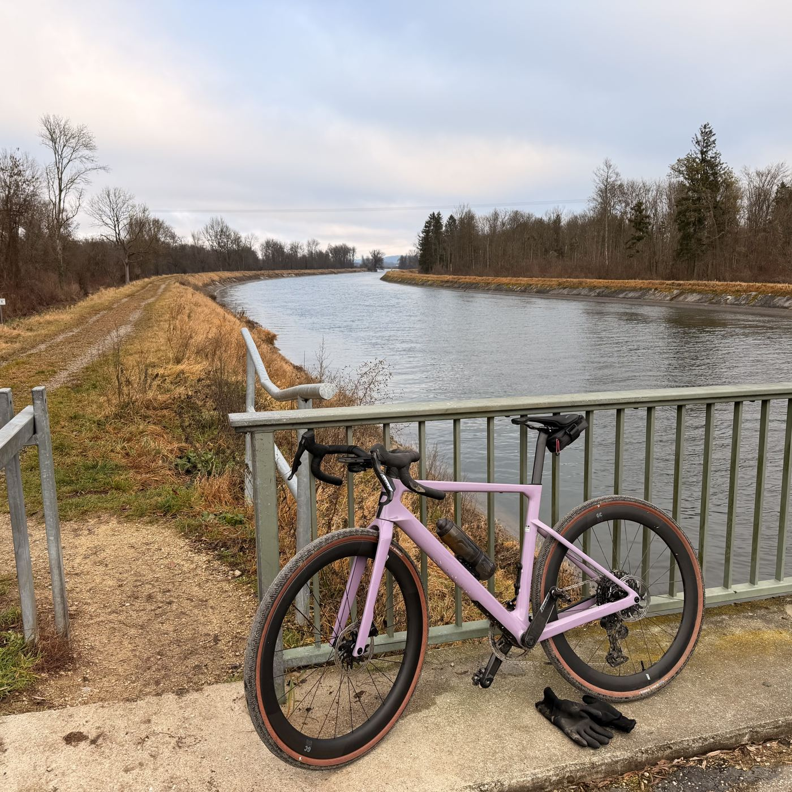
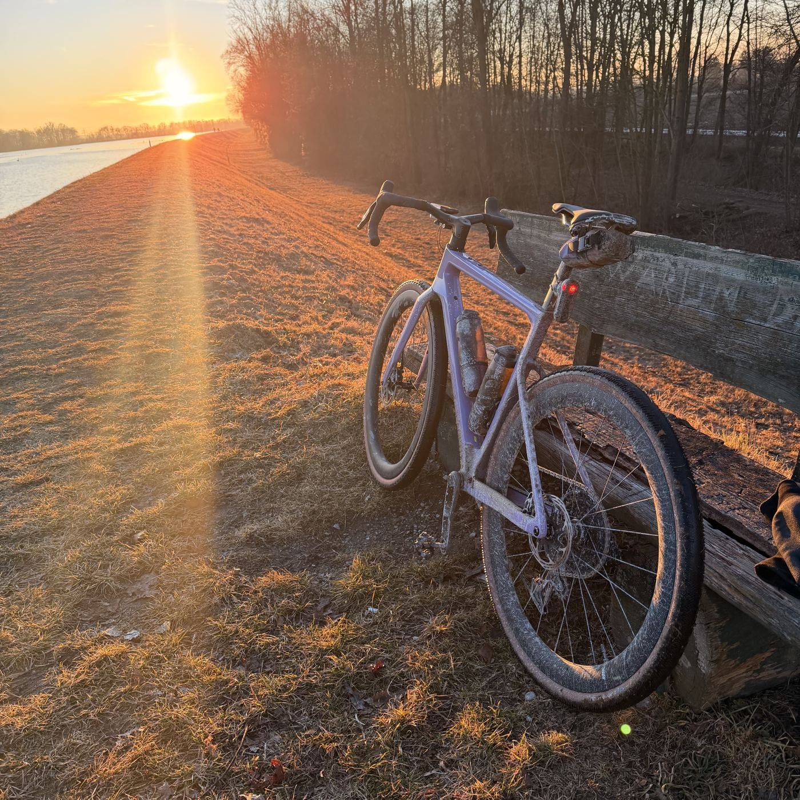
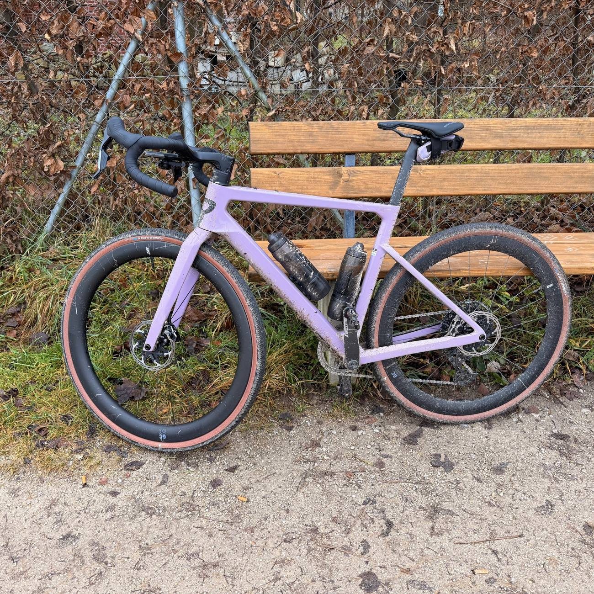

Rose Backroad FF mein Gravel-Aufbau

Gravel-Race-Bike mit SRAM Force AXS XPLR: 1x12-Antrieb statt Doppel-Kettenblatt, dazu eine Geometrie, die spürbar näher am Rennrad liegt als an klassischen Gravel-Tourern.
Rahmen & Geometrie
Carbonrahmen mit vergleichsweise langem Reach und niedrigem Stack – eine gestrecktere Sitzposition als bei den meisten Gravel-Race-Bikes. Die Geometrie orientiert sich an Roses eigenem Rennrad Xlite: längerer Reach, kürzerer Stack, verkürzter Radstand und abgesenkte Sitzstreben für ein wendiges, schnelles Handling.
Antrieb – SRAM Force AXS XPLR
1x12-Antrieb mit 44-Zähne-Kettenblatt und 10-44-Kassette, vormontierter Wolftooth-Kettenführung gegen Kettenabwurf im Gelände und integriertem Leistungsmesser. Bremsen SRAM Force AXS mit 160/160 mm Scheiben.
Laufräder & Reifen
Rose GC50 mit 12x100 mm (vorne) / 12x148 mm (hinten) Steckachsen, bereift mit Schwalbe G-One RS in 700x40c. Kurbellänge 172,5 mm, Sattelstütze Rose Aero D-Shaped.
Gewicht
Herstellerangabe rund 7,9–8 kg für die SRAM-Force-AXS-Ausstattung, je nach Rahmengröße und Fertigungstoleranz (üblich ±5 %).


Warum dieses Bike
Ursprünglich fürs gemeinsame Graveln mit meiner Frau gedacht. Mittlerweile fahre ich auch gerne eigene, schnellere Gravel-Runden – deshalb bewusst ein eher race-orientiertes Gravel-Bike statt eines Bikepacking-Allrounders. Ösen für große Taschen oder ein Gepäckträger fehlen entsprechend, das brauche ich aktuell nicht.